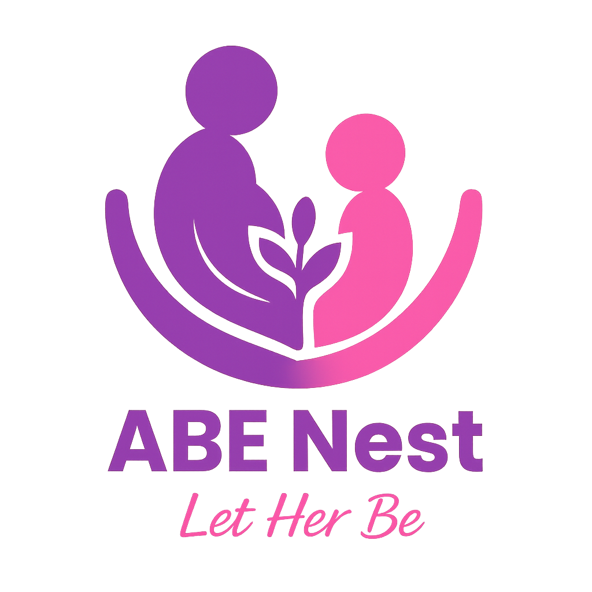
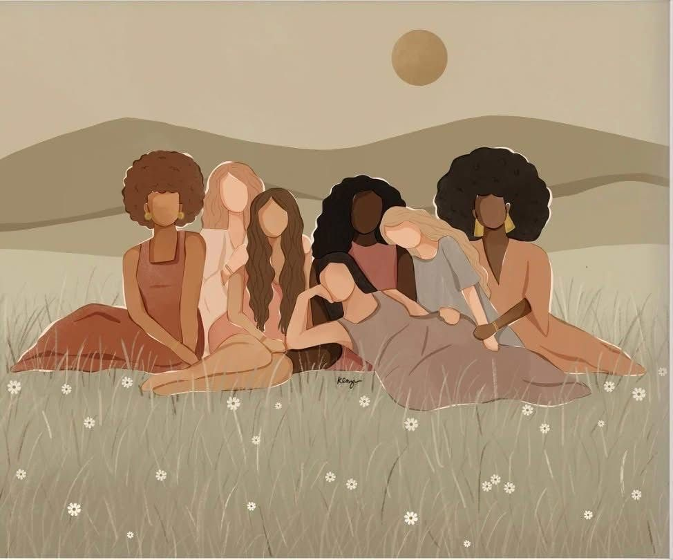
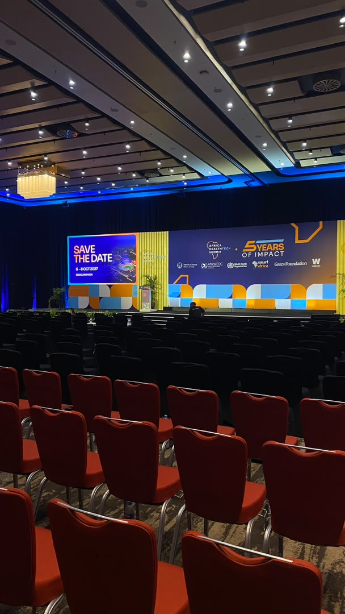

To make reliable, accessible, and inclusive health and wellness information available to young people and communities.
We empower people to make informed decisions about their bodies, nutrition, mental wellbeing, and everyday health.

ABENESTExplore welcoming, practical health education—from everyday wellbeing to menstrual and maternal health. Find useful information privately, at your own pace.
We empower people to make informed decisions about their bodies, nutrition, mental wellbeing, and everyday health.
We imagine a future where gender, background, or access to resources never stand in the way of confident care and wellbeing.
ABENEST brings trusted health guidance and support closer to girls.
A welcoming place to learn, ask questions, and feel supported.
Clear answers about bodies and wellbeing.
Gentle guidance when it matters most.
Confidence for the next step forward.

Health, care, and community within reach.
ABENEST combines practical support, education, and community-led care in ways that feel warm, respectful, and age-appropriate.
Clear, respectful learning about periods, body changes, sexual health, and finding qualified care.
Build confidence finding, understanding, and using helpful health information and services.
Gentle learning on nutrition, sleep, movement, hydration, and emotional health.
Explore wellbeingSupportive educational resources for pregnancy, postpartum wellbeing, and asking for care.
Education around boundaries, consent, safety, and the importance of support.
Online conversations, weekly topics, polls, and safe spaces for connection and confidence.
Workshops, presentations, and events that bring information directly to communities.
Support that helps girls grow beyond immediate challenges and into future possibilities.
The ABENEST Kit is part of the initiative’s practical vision: to offer girls and young women a simple, supportive collection that can accompany education, care, and encouragement in everyday life.

A practical companion to ABENEST’s wider work in education, care, and community support.
Choose English or Kinyarwanda and watch the ABENEST health-awareness videos right here. Press play whenever you are ready.
Dr. SandrinePresenter
Dr. BenjaminUmutanga ikiganiro
Learn what the phases mean, notice what feels typical for you, and explore an optional calendar estimate. You can read everything here without entering any personal details.
Add the first day of your last period to see an estimated phase and timeline.
5 days usual period · Medium flow
Add your last period to explore your cycle days.
Experiences differ. A cycle does not have to match a calendar or app prediction to be normal for you.
The uterine lining sheds. Bleeding and cramping can vary between people and between cycles.
Hormone levels change and an egg matures. The length of this phase can vary.
An ovary may release an egg. Calendar estimates cannot confirm when ovulation happens.
The body moves toward the next period; some people notice breast tenderness or mood changes.
A gentle check-in, just for you. There is no right answer, and you can skip it anytime.
Every body has its own rhythm. Simply noticing is enough.
Your choices stay in this page only. They are not saved or sent anywhere and disappear when you leave or clear them.
Search or browse health topics privately. You never need to create an account or tell us why you are reading.
Showing all learning topics.
Explore the phases, common changes, and symptoms that may be worth discussing with a professional.
A gentle guide to common changes, respectful care, and when to ask a health professional.
Small ways to care for your emotions and reach out for support without demanding perfection.
Combine familiar staples, protein, vegetables or fruit, and a little fat in flexible ways.
Ideas for asking questions, connecting with care, and making room for a young parent's wellbeing.
Try flexible habits that fit your schedule, body, environment, and access to resources.
Prepare questions for a health visit and ask a qualified professional what care suits you.
Check who created a resource, when it was reviewed, and whether it asks for more personal data than needed.
Choose one useful skill, make a small plan, and take a first step that works for you.
A one-question learning moment. Your answer is not stored.
Choose the option you think is best.
Explore room-based conversations, weekly prompts, polls, and gentle activities designed for connection and confidence.
What is one thing you wish someone had explained before your first period?
ABENEST grows from community conversations and workshops into a welcoming place to keep learning.
Community conversations help surface the questions young people and families need answered.
In-person sessions create space to share practical health knowledge and connect with support.
The website extends that learning with private, easy-to-explore resources wherever visitors are.



ABE Nest is a learning space—not a clinic. Take what helps, leave what does not, and reach out to a qualified health professional for personal advice.
Browse educational resources without an account or a personal profile.
Health reflections stay on this page only; the prototype does not save or send them.
General information can help you ask questions, but it cannot diagnose or treat you.
Learn how familiar foods can work together. There is no single perfect plate—and healthy eating should fit your culture, budget, appetite, and access.
A satisfying meal can include a filling staple, protein, and vegetables or fruit, with some fat for flavour and fullness. The balance can change from meal to meal.
Try beans with rice, sweet potato, cassava, maize, or matoke.
Beans, peas, eggs, groundnuts, milk, or small fish are options.
Add seasonal fruit or vegetables such as dodo, isombe leaves, or carrots when available.
Choose a group to find examples. Foods can belong to more than one group.
Showing all food groups.
Rice, maize, cassava, matoke, and sweet potato are familiar ways to make a meal more filling.
Try beans, peas, eggs, milk, groundnuts, or small fish such as isambaza when available.
Seasonal bananas, tree tomatoes, or passion fruit; leafy greens such as dodo or isombe leaves.
Avocado, sesame, and groundnuts can add flavour and fats. A little cooking oil may be part of a meal too.
Keep safe drinking water nearby when possible. Soups and other drinks also contribute fluids.
Beans with isombe or dodo and a staple such as ibijumba, cassava, rice, or ubugali can be one satisfying combination. Adapt it to what is available, affordable, and enjoyable for you.
No. Many people focus on regular meals, a range of foods, enjoyment, and how they feel. Calorie needs vary and are not a measure of your worth or health.
No. A varied pattern over time matters more than making every plate perfect. Work with the foods and resources available to you.
No single food is a cure. For symptoms, dietary needs, pregnancy, or a medical condition, ask a qualified health professional for advice that fits you.
This estimate is not needed to use the nutrition guide. It is not appropriate for anyone under 18, pregnant or breastfeeding, or managing a medical or eating-related concern.
For partnerships, volunteering, outreach, or support, send the team a message on WhatsApp.
Be part of a community making health knowledge more accessible, supportive, and inclusive for everyone.